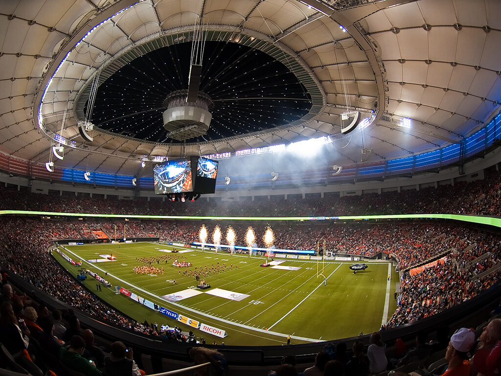
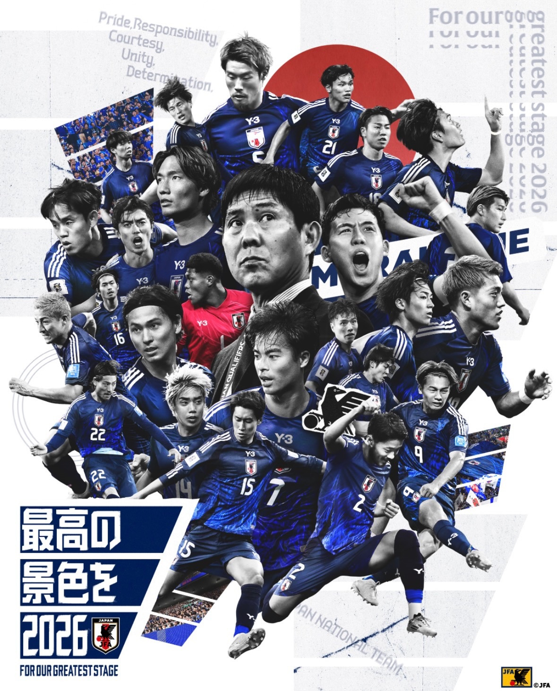
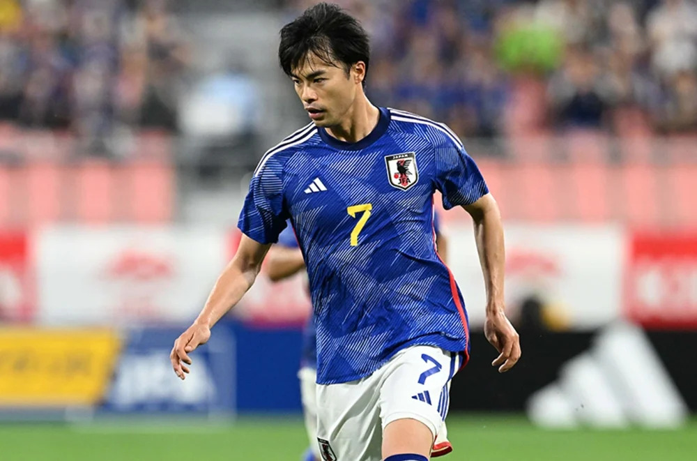
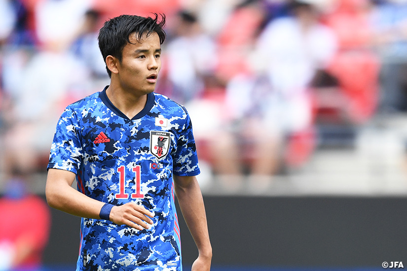
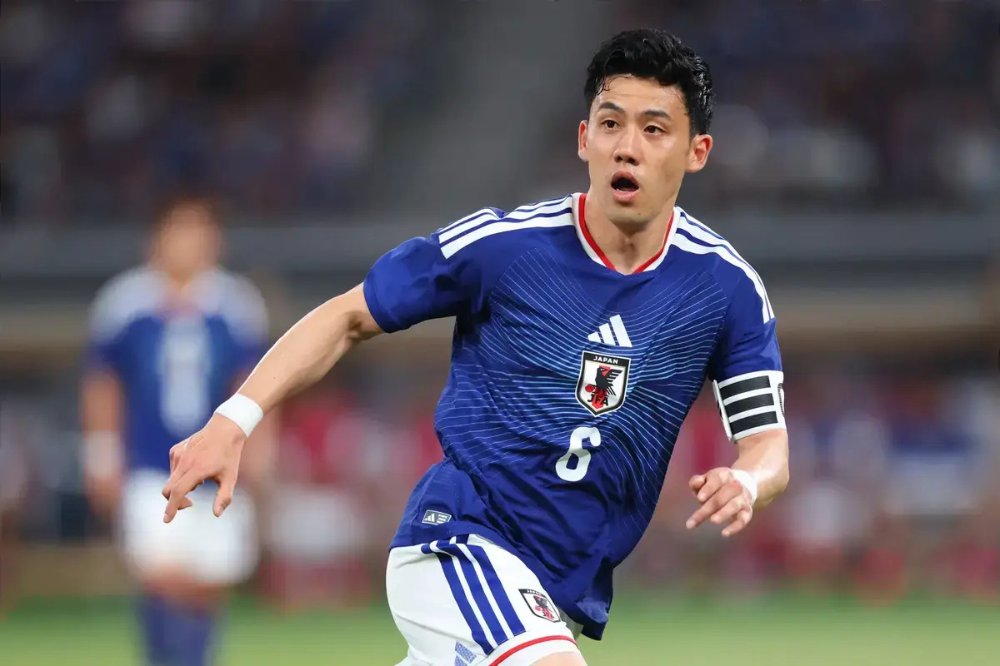

Welcome to The Samurai Blue Hub
Follow Japan's journey through the 2026 FIFA World Cup. From match schedules and player profiles to tournament history and fan predictions, The Samurai Blue Hub is your destination for everything related to Japan's national soccer team.
View ScheduleJapan. Passion. Pride. Victory.
About the Team
The Samurai Blue

Featured Players
Players to Watch
Kaoru Mitoma
A dynamic winger known for his speed, creativity, and ability to break down defenses.

Takefusa Kubo
One of Japan's brightest stars, Kubo combines exceptional technique with outstanding vision and playmaking ability.

Wataru Endo
The team's captain and midfield leader, providing stability, experience, and determination.

Quick Stats
Japan at the World Cup
- First World Cup Appearance: 1998
- Best Finish: Round of 16
- World Cup Appearances: 8
- Nickname: Samurai Blue
- Confederation: AFC (Asian Football Confederation)